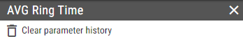

Editing Scalar-Valued Calculations¶
The calculation options control, how its results are calculated.
- Type
Required
Type of the calculation.- Built-in
The results will be generated by a built-in calculation function, provided by the connector.
- Custom
The results will be generated by a custom calculation, defined in the expression option. The expression can reference build-in calculation functions, provided by the connector(s).
- Interval Settings
Required
KPI can display historical interval data. For more information about historical intervals see Historical Intervals chapter.
- Advanced
Advanced calculation settings.
- Time Zone
Specifies based on which time zone values should be calculated.
- Refresh Interval
Interval in seconds, between each refresh of the calculation’s data.
- Log Retention
All calculated values are logged for configured number of days. Unsuccessful calculations are also logged. These logs can help with troubleshooting.
- Calculation Id
Serves for information purposes only
Id of the calculation. Calculation Id is not being automatically updated after changing calculation. Manual refresh is required to show up-to-date value.
- Notification Rules
This group contains list of configured notification rules. When enabled, notification rules are being checked for potential notifications. For more information see Notification Rules chapter.
If Built-in is selected as calculation’s type panel also contains:
- Function
Required
Connector provided calculation function, used for calculation of results.
- Parameters
A list of parameters, used by the calculation function when calculating the results. For more information see editing-calculation/parameters chapter.
If Custom is selected as calculation’s type panel also contains:
- Function
Required
The type of result the custom calculation is producing.
- Expression
Required
For more information see Expression builder chapter.
Defines the expression to be used for calculation of the results. The expression may consist of multiple child calculations called variables. Expression, after replacing variables with values, have to be valid SQL command.If the “DateTime” is used as a function for a custom KPI, expression has to evaluate to the Unix Time format in milliseconds. For more information about the Unix Time and conversion to Unix Time, visit this website.
- Variables
List of all variables. Variable represents a result of a child calculation. For more information see editing-calculation/calculation-variables chapter.
Any changes made to calculations or calculation parameters are applied only after underlying connector processed them. While the changes are being processed, a message is displayed in the bottom left corner, with text “Applying changes”. The text is followed by the list of affected connectors. The message disappears when all connectors successfully processed the change.
If Applying changes message persists for long time, without any additional changes made, there may be a problem with the connection to the server. In such case the message will be displayed until the connection is restored and changes are automatically applied. When connection is not the problem some of the connectors could not be running.
When calculation parameters are changed (created, deleted or updated) previous parameters are stored in calculation history together with date until which they were being applied. When showing historic data for segment values are shown for calculation parameters which were configured at the time that value is associated with. If current calculation parameters should be used for all historic values, regardless of used parameters at the time of those values, calculation history has to be cleared using button.
New record in calculation history is added even when data filter, that is applicable to calculation, is changed (created, deleted or updated) in corresponding BU. It is also added when parameter or data filter is using wildcard values and matching values change (connector updated available calculation parameter values).